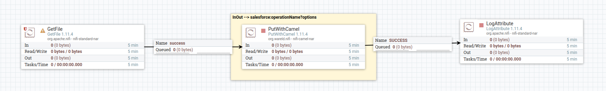
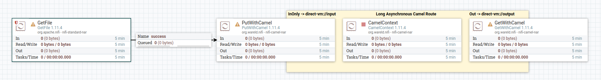
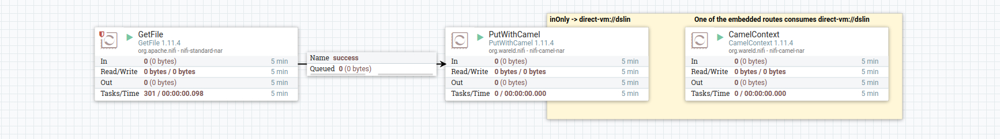
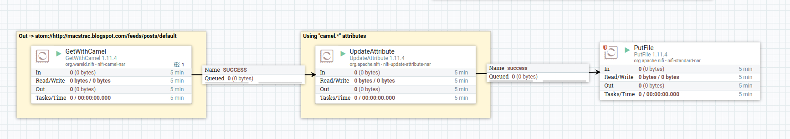
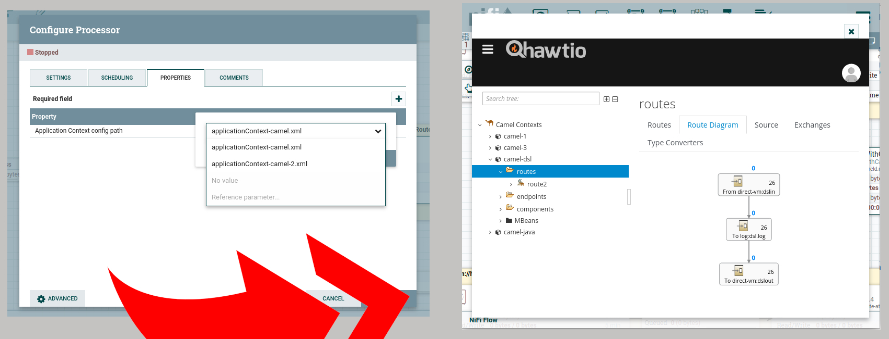
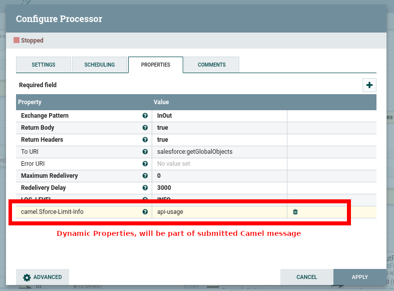

Description:
PutWithCamel – allows integration of processes encapsulated in Camel Spring Application Context.
All the Camel messaging patterns can be used.
- CamelContext - autonomous processor, loading Java and/or DSL Camel routes. It must be deployed only once per Camel context to load.
- GetWithCamel - processor to consume Camel bind point (can be a component or end of route "direct-vm:output"...).
This processor is downstream only.
- PutWithCamel - processor to submit to Camel bind point (can be a component or begining of route "direct-vm:input"...).
This component can be used, in Camel terminology as InOut or InOnly, in Nifi terminology, with upstream, and with or without downstream.
These examples below demonstrate messaging patterns implementation.
Camel InOut

Camel InOnly-Out (loosely coupled)

Camel InOnly

Camel Out

Need to embed your own routes ?
- Adapt nifi-camel-deps/pom.xml to embed the Camel components you need.
- Code the Camel routes you want, in Java or in Camel DSL, make them available in nifi-camel-deps/src/main/resources/somecontext.xml.
- Add the Spring context filename to nifi-camel-processors/src/main/java/org/wareld/nifi/camel/processors/CamelContext.java CTX_CONFIG_PATH allowed values.
- build and deploy.
- Add CamelContext processor, with selected application context, and "Run Schedule = 12 hours".

Use Camel Headers from Nifi Attributes, and Nifi Attributes for Camel Headers (and vice versa)
- expression support.
- from Nifi to Camel.
- from Camel to Nifi.
